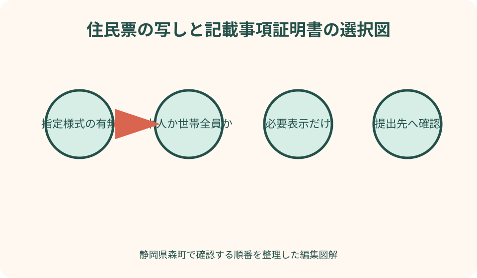
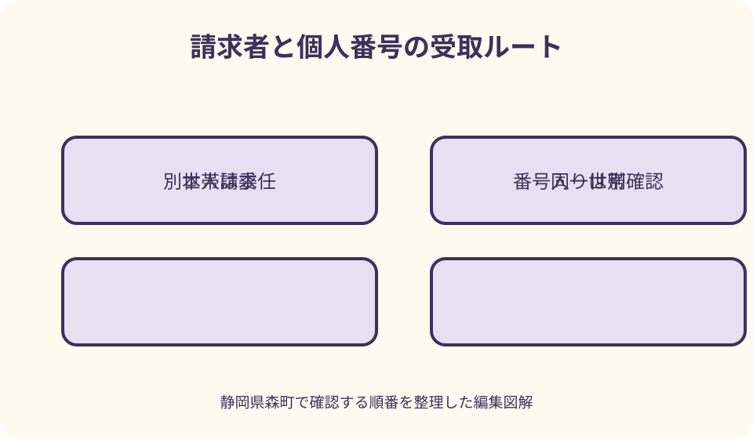

行政手続・証明書｜最終確認 2026-08-10
静岡県森町の住民票記載事項証明書｜指定様式と必要項目を確認
住民票記載事項証明書は、勤務先や学校などが作った様式に記載された住所・氏名・生年月日等が、住民票の記録と一致することを市区町村が証明する書類です。住民票の写しと似ていますが、提出先の指定様式や必要項目を確認せず取得すると、再提出になることがあります。森町の請求書と公式案内を基に、窓口へ持参する紙、本人確認、委任状、郵送、個人番号の扱いを順に整理します。

編集イラスト住民票記載事項証明書は記載内容の一致を証明する
住民票記載事項証明書は、市区町村が保有する住民票の記録のうち、申請用紙に書かれた事項が正しいことを証明する書類です。勤務先の扶養手続、学校への提出、年金や資格関係などで指定されることがあります。
住民票の写しは、市区町村の住民票記録を所定の形式で出力した証明です。一方、記載事項証明書は、提出先が必要とする項目に絞った用紙へ証明を受ける使い方があります。名称が似ていても提出先の意図が違います。
森町の窓口用請求書には、住民票謄本・抄本・除票と並んで「記載事項証明書」の選択欄があります。最初にこの証明名を住民生活課住民係へ伝え、持参した指定用紙を使えるかを確認します。
会社から「住民票」と口頭で言われただけなら、住民票の写しと記載事項証明書のどちらかを決めつけません。提出先の案内、様式名、記入例、必要項目、発行日の条件を確認してから役場へ向かいます。
指定様式があるかを提出先へ先に聞く
勤務先や学校が専用の記載事項証明書を配っている場合は、その原本を用意します。ウェブからダウンロードする様式なら、年度や雇用区分が合っているかを確認し、両面印刷、用紙サイズ、切り離しの指示を守ります。
申請者が先に記入する欄と、市区町村が記入・証明する欄を混同しないようにします。訂正方法が指定されている場合もあるため、消せるペンや修正テープを使わず、誤記したときは新しい用紙を用意するのが安全です。
指定様式がない場合は、森町の様式による記載事項証明書で提出できるかを提出先へ尋ねます。住民票の写しでも代用できると言われたなら、どの記載項目が必要かを聞き、より多くの個人情報を載せない書類を選びます。
提出先への質問は、「住所・氏名・生年月日の証明でよいか」「世帯主と続柄、本籍、個人番号は必要か」「世帯全員か本人だけか」「原本かコピーか」の四点に分けます。回答者と確認日もメモします。
必要な表示だけを選び個人情報を増やさない
森町の住民票請求書では、世帯主氏名・続柄、本籍・筆頭者氏名、住民票コード、外国籍の人の通称履歴や国籍・在留情報、個人番号などの表示を選ぶ欄があります。全てにチェックするのではなく、提出先が求める項目だけを選びます。
就職先へ住所と氏名を証明するだけなら、本籍や筆頭者まで必要とは限りません。本籍は慎重に扱う情報です。「詳しい方が確実」という考えで追加せず、提出先の書面に明記がない項目は確認します。
世帯主・続柄は、扶養や世帯関係を確認する手続で求められる場合があります。ただし住民票上の同一世帯と、税や健康保険の扶養は同じ概念ではありません。続柄が載れば扶養認定されると決めつけないでください。
外国籍の住民について、国籍・地域、在留資格、在留期間、通称履歴など何が必要かは提出目的で異なります。在留カードの代わりに全情報を載せればよいと考えず、提出先と森町窓口の双方へ必要範囲を確認します。

個人番号と住民票コードは特に慎重に扱う
個人番号入りの証明は、提出先が法令上番号を扱う手続として明確に求めた場合だけ検討します。「会社に出すから」という理由だけで個人番号へチェックせず、担当部署名と使用目的を確認します。
個人番号が不要な手続へ番号入り書類を提出すると、提出先が受け取れず再取得になることがあります。封筒へ入れる前に、証明書へ個人番号が表示されているかを確認し、不要なら窓口でその場に応じた案内を受けます。
森町の請求書は、代理申請による個人番号または住民票コード入りの住民票の写しについて、代理人へ窓口交付できない旨を注意しています。本人の住民登録地へ郵送する扱いなど、受取方法を事前に住民係へ確認します。
住民票コードも、一般の就職・学校提出で常に必要な項目ではありません。提出先が単に本人識別番号と言っている場合、それが個人番号、社員番号、受験番号、住民票コードのどれかを聞き、別の番号を書かないようにします。
本人・同一世帯員・代理人を住所ではなく世帯で分ける
本人が自分の記載事項証明書を取る場合は、窓口に来る本人の確認書類と指定様式を準備します。森町公式が示す本人確認書類の区分を実行日に確認し、氏名・現住所・有効期限が現在の登録と合っているかを見ます。
森町公式は、同一世帯の人が住民票の写しや住民票記載事項証明書を取る場合、委任状を省略できると案内しています。ここでいう同一世帯は、同じ住所に住んでいるだけでなく、住民票上も同じ世帯であることが基準です。
夫婦や親子でも、同住所の別世帯なら同一世帯員とは限りません。二世帯住宅、世帯分離後、施設入所などでは、家族だから委任状不要と考えず、現在の住民票上の世帯を確認します。
代理人が請求する場合は、本人が作成した委任状など代理権限を示す書面と代理人の本人確認が必要です。証明書の種類、対象者、必要項目、通数、受取権限を具体的に書き、白紙委任を避けます。
窓口で指定用紙を証明してもらう流れ
窓口へ着いたら、まず提出先指定の住民票記載事項証明書であることを伝えます。町の請求書にも記載事項証明書を選び、誰の何通が必要か、世帯全員か本人分かを記入します。
指定用紙へ本人が記入する欄は、住民票の記録どおりに書きます。住所の方書、氏名の字体、生年月日の和暦・西暦などが不明なら、窓口で確認しながら進めます。記録と違う通称や勤務先の略記を勝手に書きません。
証明できない項目が様式に含まれる場合、市区町村欄と会社記入欄を分ける必要があります。役職、給与、入社日、社員番号など住民票にない事項まで役場が証明するわけではありません。どの欄を空欄にするか提出先へ確認します。
交付後は、氏名、住所、生年月日、必要表示、証明日、公印等をその場で確認します。指定様式の裏面や別紙が抜けていないかも見ます。提出前に自分で追記すると証明内容との境界が曖昧になるため、訂正は窓口へ相談します。
住民票の写しで代用できるかを見極める
提出先が必要とするのが現住所・氏名・生年月日だけなら、住民票の写しで代用できる場合があります。ただし、似た情報が載るから同じだと自己判断せず、提出先から住民票の写しでも受理するという回答を得ます。
住民票の写しを選ぶ場合も、本人分か世帯全員分か、世帯主・続柄、本籍等の表示を確認します。世帯全員分を出すと、提出対象でない家族の情報まで相手へ渡すことになります。本人分で足りるなら個人の写しを選びます。
コンビニ交付は、森町に住民登録がある一定の人がマイナンバーカードを使い、住民票の写し等を取得するサービスです。森町公式が対象として示すのは住民票の写しなどであり、指定用紙の記載事項証明をコンビニ端末へ持ち込んで証明することはできません。
コンビニ交付の住民票には、表示できない項目や利用条件があります。森町公式は住民票コードが記載されないと案内しています。必要項目が対象外なら、時間を節約しようとしてコンビニを使わず窓口請求へ切り替えます。
郵送請求は指定用紙と返送条件を先に確認する
森町公式の住民票請求ページは郵便請求を案内しています。記載事項証明書を郵送で依頼したい場合は、提出先の指定用紙を森町へ送って証明できるか、町の様式を返送する扱いかを住民係へ先に確認します。
郵送では、請求書、指定用紙、本人確認書類の写し、最新の手数料、返信用封筒をそろえます。便箋等で請求する場合も、住所、氏名、生年月日、対象者、通数、必要事項、日中の連絡先を明確にします。
本人確認書類の写しは、返送先となる現住所を確認できるものを用意します。マイナンバーカードの裏面など不要な個人番号を同封せず、森町の最新説明に従います。代理請求なら委任状と返送先の扱いを別に確認します。
学校や会社の締切があるときは、郵送日だけでなく役場での確認と返送の日数を見込みます。不備照会に備え、平日日中につながる電話番号を書きます。速達を使っても役場の処理時間がゼロになるわけではありません。
転入・転居直後は住民票の反映を確認する
森町へ転入した直後や町内転居の届出直後に証明が必要な場合は、新住所が住民票へ反映されたかを住民係へ確認します。引っ越す予定の住所ではなく、届出が受理された住民登録上の住所が証明対象です。
勤務先の入社日と転入日が近いとき、旧住所の証明と新住所の証明のどちらを出すかは会社へ確認します。将来の住所を先に記載して証明してもらうことはできません。提出期限を調整できるかも尋ねます。
世帯主変更、婚姻、離婚と同時期に請求する場合、氏名や続柄の反映時点も確認します。届出書を出した事実だけで、新しい氏名・世帯関係が即座に全ての証明へ出ると決めつけません。
証明を取得した後に住所や氏名が変われば、提出先から再取得を求められる場合があります。証明日からの有効期間だけでなく、記載内容に変更がないことが条件かを提出先へ聞き、早過ぎる取得を避けます。

外国籍住民の証明は在留情報の範囲を決める
外国籍の住民も住民票記載事項証明書を求められることがあります。森町請求書には、通称履歴情報や国籍・在留情報の表示選択があります。提出先が何を確認したいのかを聞き、必要な項目だけを選びます。
在留カードの表記と住民票の氏名順、通称、住所表記が異なって見える場合は、自分でどちらかへ合わせて書き換えず、住民係へ確認します。勤務先のシステム都合による略称は、公的記録の証明欄とは分けます。
在留資格や在留期間を求められた場合でも、証明書だけで就労可否の全てを判断できるとは限りません。勤務先が在留カード等も必要としているかを確認し、住民票記載事項証明書へ過剰な情報を載せないようにします。
日本語の指定様式の読み書きに支援が必要な場合、本人の意思と情報を確認できる方法を住民係へ相談します。知人が代筆した用紙をそのまま証明できるか、代理請求になるかを事前確認し、署名欄の扱いを曖昧にしません。
良い点
住民票記載事項証明書の良い点は、提出先が必要とする住民票上の項目に絞って公的な確認を受けられることです。世帯全員の住民票を渡さずに済む場合があり、家族の不要な情報を提出先へ広げにくくなります。
指定様式を使えば、会社や学校の事務で必要な欄と市区町村の証明欄を一枚にまとめられます。提出先が転記する手間を減らし、住所や生年月日の入力間違いを防ぐ材料になります。
森町では窓口用請求書に記載事項証明書の選択欄があり、世帯主・続柄、本籍、外国籍情報、個人番号等の必要表示を確認できます。申請者が何を載せるか考える入口が明示されています。
郵送請求の選択肢を確認できる点も、役場から遠い山間部や町外滞在中の人には有用です。指定用紙を扱えるか事前相談し、封入物を揃えれば、平日の移動負担を減らせる可能性があります。
注文したい点
森町公式の住民票請求ページは、住民票の写しと記載事項証明書を同じ本人確認案内の中で扱っていますが、両者の使い分けや指定様式の持参方法は詳しく説明していません。初めての人には、何を役場へ持って行くかが分かりにくい点があります。
コンビニ交付ページで住民票の写しを取得できることから、記載事項証明書も端末で出せると誤解しやすい点にも注意が必要です。提出先専用用紙への証明が必要なら、窓口対応を前提に確認する必要があります。
個人番号や住民票コードを選べる請求書は便利ですが、提出先が必要としていないのにチェックする危険もあります。代理請求時の受取制限まで含め、番号入り証明は別枠で目立つ案内があると利用者は判断しやすくなります。
勤務先・学校の様式は年度途中で変わることがあります。町が証明できる形式でも提出先が旧様式を受け付けない可能性があるため、役場と提出先の両方へ確認する往復が必要です。公印があれば何でも有効とは限りません。
予定どおり受け取れないときの確認順
指定様式に住民票にない項目が含まれる場合は、役場へ記入を求め続けず、提出先へ別紙や空欄でよいか確認します。勤務先が証明する給与・雇用情報と、森町が証明する住民情報を一枚で分けられるかを聞きます。
本人確認書類が足りない場合は、家族の書類を借りず、森町公式の区分へ戻ります。写真付き一種類または写真なし二種類の具体的な組合せ、有効期限、住所変更欄を住民係へ確認して再準備します。
別世帯の家族が委任状なしで来た場合は、同じ住所だから受け取れると押し切らず、本人からの委任状を用意します。急ぎなら、本人が来庁する、郵送請求をする、提出期限を相談するという代案を並べます。
個人番号入りの証明を代理人が窓口で受け取れない場合は、本人住所への郵送条件と日数を確認します。締切当日に代理人へ依頼する前に、提出先へ番号なし証明で足りるか、後日提出にできるかを相談します。
代案・結論
指定様式がない場合の第一の代案は、森町所定の記載事項証明書または住民票の写しです。提出先へ必要項目を読み上げ、どちらを受け付けるか確認します。役場で取得できるという理由だけで書類を選びません。
平日に窓口へ行けない場合は、郵送で指定様式を証明できるか住民係へ相談します。単に住民票の写しをコンビニで取る方法へ置き換えず、提出先が指定様式を求める理由を確認します。
本人以外が動く場合は、森町内同一世帯員か別世帯の代理人かを分けます。同一世帯なら委任状を省略できる案内がありますが、個人番号等の表示や受取方法には追加条件があるため、必要項目を先に伝えます。
結論として、提出先の様式、証明する人、必要項目、請求者の立場、受取方法の五点を決めてから森町へ申請します。住民票記載事項証明書は、情報を多く載せる書類ではなく、必要な住民情報だけを正確に証明する書類として使います。
大石の視点
大石の視点では、証明書取得を「念のため全部入り」にしないことが大切です。勤務先へ本籍や家族全員の情報を出す必要がないなら、必要項目だけの記載事項証明書を選ぶ方が、個人情報の管理として分かりやすくなります。
不動産契約や相続で住民票記載事項証明書を求められた場合も、誰の何を確認する書類かを聞きます。住所履歴を証明したいなら戸籍の附票、死亡時住所なら除票など別の証明が適することがあり、名称の近さで代用しません。
森町の山間部から役場へ出る人は、会社指定用紙を忘れた一往復が大きな負担になります。指定様式、本人確認、委任状、必要表示、通数を写真ではなくチェック表にし、個人番号が必要かを提出先へ確認してから移動します。
証明後の書類は、住所や生年月日を含む重要資料です。コピーを家族チャットへ残さず、提出日、提出先、原本返却の有無を記録します。使い終えた予備コピーを放置しないところまでが、証明取得の実務だと考えます。
申請前後の最終チェック
申請前は、提出先の正式な書類名、指定様式、本人分か世帯全員分か、必要表示、発行日の条件を確認します。指定用紙には自分が書く欄だけを記入し、証明欄や公印欄を空けます。
窓口へ行く人は本人確認書類を用意し、本人・同一世帯員・別世帯代理人のどれかを確認します。代理なら委任状、個人番号や住民票コードを求めるなら受取方法を追加確認します。
交付後は、氏名、住所、生年月日、対象者、必要表示、証明日を指定内容と照合します。誤りに気付いたら自分で修正せず、役場を離れる前に住民係へ伝えます。提出先へは原本・コピーの指定に従います。
この記事の確認日は2026年8月10日です。手数料、本人確認、コンビニ対象証明、郵送条件は変わり得ます。実行日に森町公式ページと最新請求書を確認し、指定様式の受理可否は提出先と住民生活課住民係の両方へ確認してください。
公式情報・確認先
掲載内容は次の一次情報を基礎に整理しました。営業、料金、催し、交通は変わるため、出発前または手続き前にリンク先で最新情報を確認してください。
- 住民票の写しの申請（静岡県森町、2026-08-10確認）
- 住民票の写し等請求書（窓口用）（静岡県森町、2026-08-10確認）
- 証明書のコンビニ交付サービスについて（静岡県森町、2026-08-10確認）
- 申請書（委任状・住民票・印鑑証明・戸籍）（静岡県森町、2026-08-10確認）
- 水曜日時間外窓口業務について（静岡県森町、2026-08-10確認）